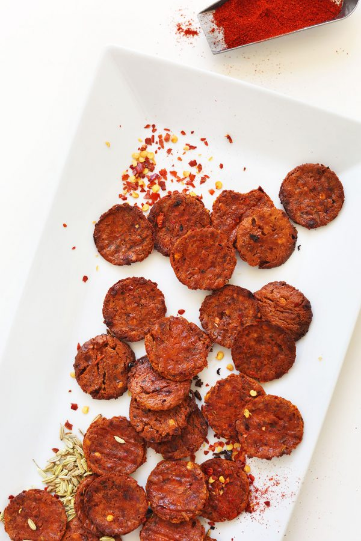

Vegan Pepperoni

Servings: 30 (slices pepperoni)
Ingredients
- 10 ounces extra-firm tofu (organic when possible)
- 1 - 1 1/2 tsp each sea salt and ground black pepper
- 2-3 tsp crushed red pepper flakes (depending on preferred heat level)
- 2 tsp ground mustard seeds
- 1 tsp fennel seeds (lightly crushed)
- 2 tsp smoked paprika
- 2 tsp garlic powder
- 2 tsp coconut sugar
- 1/4 tsp ground anise
- 1 tsp A1 sauce or liquid smoke (optional)
- Cooking spray or olive oil for baking
Instructions
- Wrap tofu in a clean towel and set something heavy on top - like a cast-iron skillet - to press out liquid for 10-15 minutes. Also preheat oven to 400 degrees F (204 C).
- Once pressed, cube tofu and add to a food processor along with sea salt, black pepper, red pepper flake, ground mustard, fennel seeds, smoked paprika, garlic powder, coconut sugar, ground anise, and A1 sauce/liquid smoke (optional). Mix/pulse to combine, scraping down sides as needed.
- Sample and adjust seasonings as needed, adding more salt for saltiness, red pepper flake for heat, paprika for smokiness, or coconut sugar for sweetness.
- Transfer the mixture to a parchment-lined baking sheet (or more baking sheets, as needed, if increasing batch size). Lay a sheet of plastic wrap or parchment paper on top and use your hands to spread into a uniformly thin layer about 1/4th - 1/8th inch thick (see photo). The more even the layer is, the more evenly it will bake. Spritz with a little nonstick spray or gently brush with a bit of oil to help it crisp up.
- Bake at 400 degrees for 25 minutes, or until golden brown and slightly dried out. Then use a small or medium circular cookie cutter to cut out “pepperonis” (see photo). Feel free to keep the scrap pieces as well! They're just not as pretty.
- At this point, the pepperonis are ready to add to a pizza, where they should bake at least another 10-15 minutes. Time accordingly based on how long your crust takes to bake. You'll know they're ready when they're deep red in color and slightly crisp to the touch.
- If you don't want to add them to a pizza right away, simply let them cool, cover, and refrigerate (up to 4 days) or freeze (up to 1 month) for later use. If frozen, let thaw slightly before adding to the pizza to bake.
Nutrition
Serving: 1 of 30 | Calories: 14 | Carbohydrates: 0.8 g | Protein: 1 g | Fat: 0.9 g | Trans Fat: 0 g | Cholesterol: 0 mg | Sodium: 60 mg